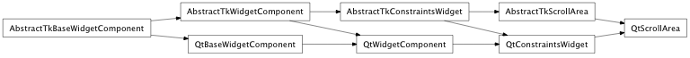
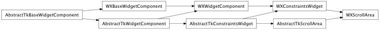

Bases: enaml.components.layout_task_handler.LayoutTaskHandler, enaml.components.constraints_widget.ConstraintsWidget
A LayoutComponent subclass that displays just a single child in a scrollable area.
A read-only property which returns the scrolling component for the area, or None if one is not defined.
The horizontal scroll policy.
The vertical scroll policy.
The preferred (width, height) size of the scroll area. Each item of the tuple can be either None or an integer. If None, then that component is requested from the child widget’s size hint. As a default, the height is fixed to 200 and the width is taken from the widget. This accounts for the typical use case of display a lot of vertically laid-out information in a confined area.
How strongly a component hugs it’s contents’ width. Scroll areas do not hug their width and are free to expand.
How strongly a component hugs it’s contents’ height. Scroll areas do not hug their height and are free to expand.
Overridden parent class trait
Scrolls the area such that position is visible with a minimum of margin_size points surrounding position.
| Parameters: |
|
|---|
A reimplemented parent class method which uses the given preferred size when computing the size hint, but falls back to the scrolled component’s size hint if a preferred size is not given.
A reimplemented LayoutTaskHandler handler method which will perform necessary update activity when a relayout it requested.
Updates the minimum size of the scrolled component with its computed minimum size, or its size hint.
alias of __NoInterface__

Bases: enaml.backends.qt.qt_constraints_widget.QtConstraintsWidget, enaml.components.scroll_area.AbstractTkScrollArea
Qt implementation of a ScrollArea.
The change handler for the ‘horizontal_scrollbar_policy’ attribute of the shell object.
The change handler for the ‘vertical_scrollbar_policy’ attribute of the shell object.
The change handler for the ‘layout_children’ attribute of the shell object.

Bases: enaml.backends.wx.wx_constraints_widget.WXConstraintsWidget, enaml.components.scroll_area.AbstractTkScrollArea
A Wx implementation of ScrollArea.
The change handler for the ‘horizontal_scrollbar_policy’ attribute of the shell object.
The change handler for the ‘vertical_scrollbar_policy’ attribute of the shell object.
The change handler for the ‘layout_children’ attribute of the shell object.
Scrolls the area such that position is visible with a minimum of margin points surrounding position.